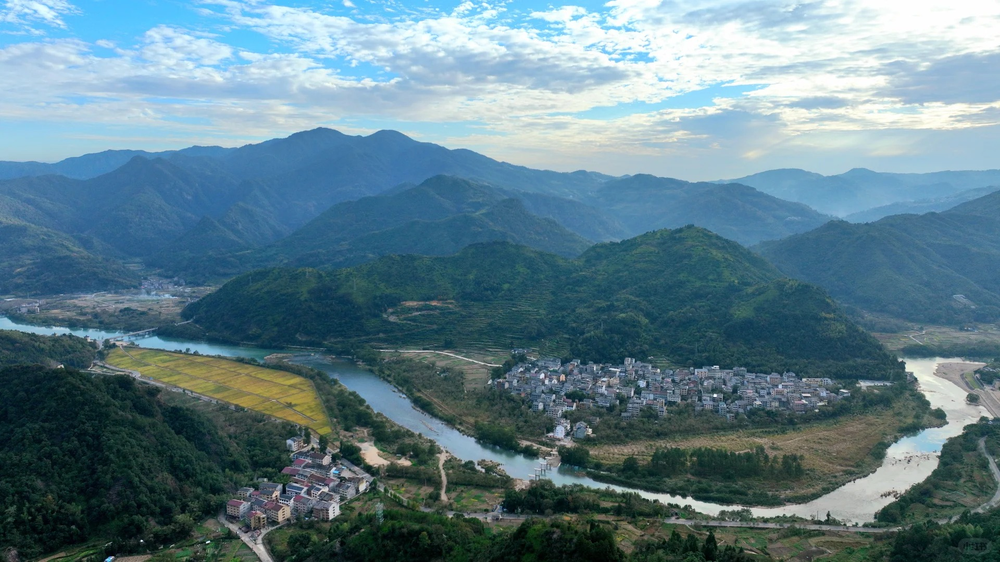
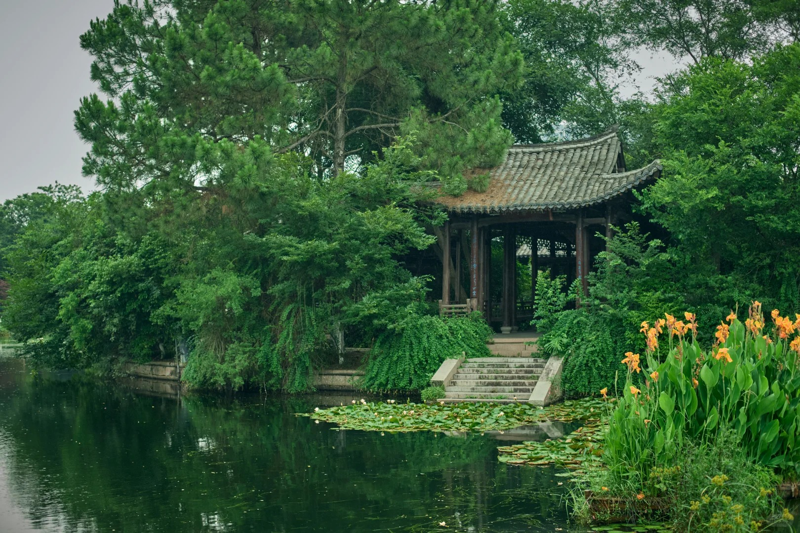
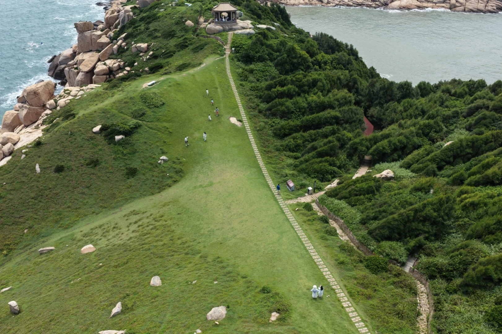
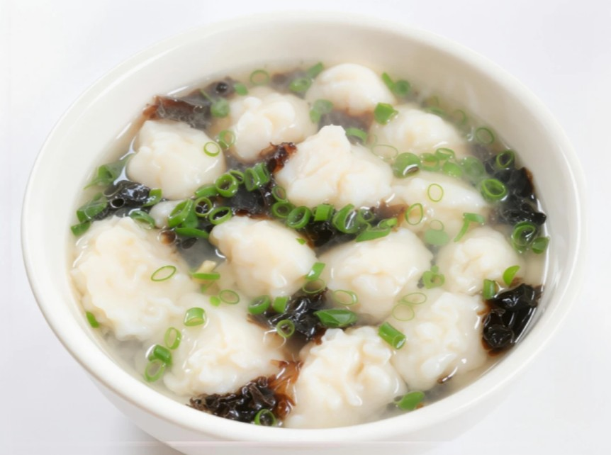
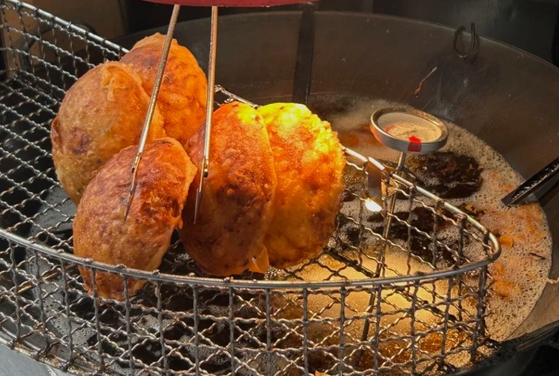
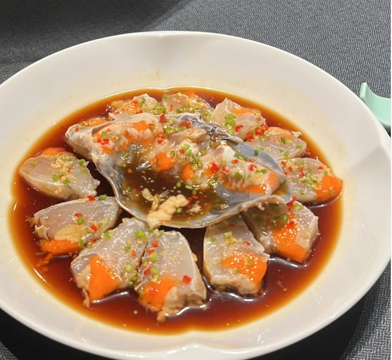
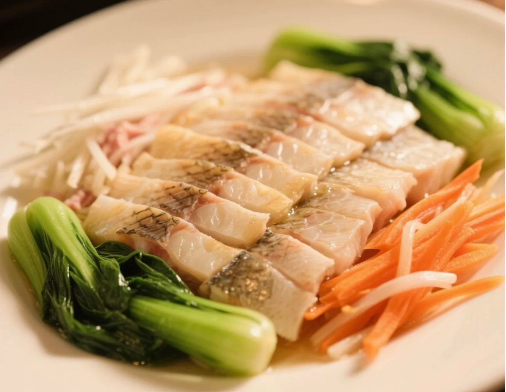
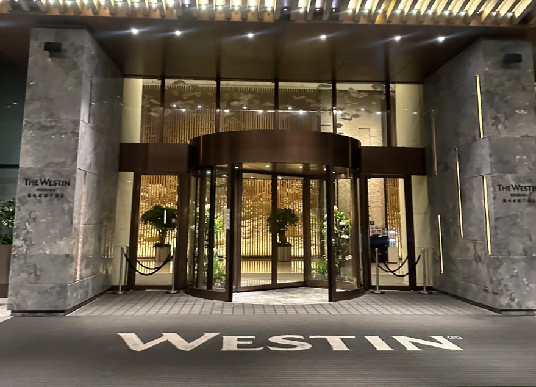

世界地质公园，奇峰怪石、飞泉瀑布遍布，被誉为海上名山、寰中绝胜。

国家级山水风景区，溪滩平缓古村错落，山水田园风光独具江南韵味。

城市内天然水乡湿地，河道纵横、绿植繁茂，是休闲观鸟、亲近自然的好去处。
温州百岛之县，海岛海岸风光秀丽，沙滩礁石相映，适合海岛度假。
国内罕见阶梯式大瀑布，三级瀑布落差超350米，水流磅礴气势震撼。

国家级海洋自然保护区，碧海细沙，海鲜资源丰富，是小众滨海度假胜地。
温州国民早餐，软糯米饭搭配肉末油条碎与肉汤，香气浓郁、口感丰富。

选用鲜活海鱼手工捶制，鱼丸Q弹滑嫩，清汤鲜甜，是温州经典家常小吃。

温州街头特色油炸小吃，外皮酥脆，内裹萝卜丝与鲜肉，咸香十足。

温州特色生腌海鲜，蟹肉鲜嫩入味，鲜中带辣，是本地宴席必备冷菜。

温州传统名菜，鱼肉薄透搭配火腿、香菇、青菜三丝，汤汁清爽鲜美。
分层米制甜糕，口感软糯清甜，层次分明，是温州传统特色甜品。
坐落温州城市核心商圈，配套高端休闲设施，全景落地窗可俯瞰城市风光，商务出行优选。

现代轻奢设计风格，配备专业健身中心与恒温泳池，出行便捷，兼顾休闲与商旅需求。
紧邻城市商业中心，客房宽敞雅致，配套中西式餐厅，服务贴心周到。
🤖 欢迎咨询智能旅游助手！
我可以为您推荐：
智能体功能开发中，敬请期待！